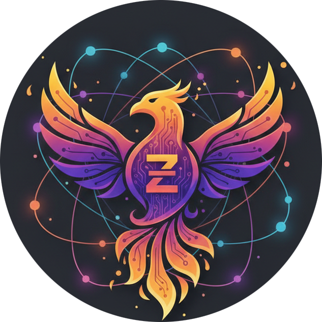

AI automation language — three-tier runtime (Elixir + Zig + Python) for agentic coding and ML workflows. Immutable by design — safer and easier to reason about than languages built around mutable state.
git clone https://github.com/Zixir-lang/Zixir.git && cd Zixir && git checkout v7.1.0 && mix deps.get && mix zig.get && mix compile
Clone, build, and run Zixir locally. No cloud sign-up — everything runs on your machine.
Linux / macOS
Windows (PowerShell)
mix phx.server and open http://localhost:4000 in your browser for the Zixir dashboard (workflows, AI Playground, vector search, observability). Fully self-hosted; no data leaves your machine.
Zixir ships with a local web dashboard. Start it with mix phx.server and open http://localhost:4000. Everything runs on your machine — no SaaS, no account, no data sent elsewhere.
The UI is part of the same repo. Clone, build, run — you own the full stack. Ideal for local development, air-gapped environments, or teams that want to keep pipelines and data on-premises.
One language replaces Airflow + Redis + Prometheus. Built-in orchestration, checkpointing, circuit breakers, and caching — no extra infra. Zixir is an immutable language: variables cannot be reassigned, so code is easier to reason about and less prone to bugs than in many general-purpose languages where mutable state is the default.
Self-hosted by default: Clone the repo, build, and run. The runtime and optional web UI run entirely on your machine. No cloud lock-in, no Redis or K8s required for workflows.
Own grammar and semantics. Write .zixir; runtime is Elixir + Zig + Python.
Elixir orchestrates, Zig runs the engine (NIFs), Python handles ML and data.
Native in-memory backend plus 9 optional backends (pgvector, Redis, Azure, etc.).
No Redis, K8s, or separate DB for workflows. Elixir runtime only.
Variables are single-assignment; data doesn’t change in place. A clear improvement over mutable-first languages for correctness and concurrency.
Native pattern matching and type inference. Unique among workflow tools.
Interactive REPL and mix zixir.lsp for VS Code.
Zixir is its own language — not Elixir syntax. You write .zixir source files with a small, expression-oriented grammar. Zixir is immutable: once you bind a value with let, it cannot be changed — an advantage for reliability and clarity over mutable-by-default languages.
id = expr — bind a name to a value (immutable; no reassignment)+, -, *, /)op(args) — call into the Zig engine (e.g. engine.list_sum([1.0, 2.0, 3.0]))"module" "function" (args) — call Python (e.g. python "math" "sqrt" (4.0))Source is parsed in Elixir into a Zixir AST. It can be interpreted (Zixir.eval(source) — engine calls run in Zig NIFs, python calls go to Python via a port) or compiled (Zixir.Compiler.compile(source) — type-checks, optimizes, emits Zig; then compile to a native binary or run JIT). Your code stays Zixir-only; the runtime is Elixir + Zig + Python.
Learn the language from zero to real projects. Read the complete guide →
This is what the complete guide shows:
Progressive learning · Every concept explained · 20+ complete examples · 4 real projects · Exercises with solutions · Visual aids · Error handling · AI-focused automation workflows.
40+ pages · 20+ code examples · 4 major projects · 6 practice exercises per chapter · 22 engine operations documented · Complete grammar reference · Quick reference card.
→ Zixir Language complete guide (read on GitHub) · Download (Markdown) · Download PDF
To rebuild the PDF locally: npx md-to-pdf "docs/Zixir Language complete guide.md" then keep the generated Zixir Language complete guide.pdf; or use .\scripts\build-guide-pdf.ps1 (pandoc + LaTeX).
| Feature | Zixir | Airflow | Prefect |
|---|---|---|---|
| External infrastructure | Elixir runtime only | Redis + DB | Minimal |
| Setup time | ~20 min | ~2 hours | ~1 hour |
| Pattern matching | Yes | No | No |
| Interactive REPL | Yes | No | No |
| Fault tolerance | Supervision + circuit breakers | Basic | Basic |
| LSP support | mix zixir.lsp | No | No |
Requirements: Elixir 1.14+ / OTP 25+, Zig 0.15+ (build-time), Python 3.8+ (optional, for ML/VectorDB).
Platforms: Windows, macOS, Linux. See SETUP_GUIDE.md for step-by-step install per OS.
config :zixir, :python_path if Python is not on PATH.pip install and setup.Parser, Engine NIFs (20+ Zig ops), Zig backend, type system, workflow (steps, retries, checkpoints), observability, cache (ETS + disk), CLI/REPL, LSP, package manager, VectorDB (9 backends), optional MLIR.
Zixir was created and is maintained by Leo Louvar. The project is open source on GitHub (Zixir-lang/Zixir). See CONTRIBUTORS.md and LinkedIn for more.
An AI automation language with its own grammar. You write .zixir source; it runs on a three-tier runtime (Elixir + Zig + Python) for agentic and ML workflows.
No. Zixir is its own language (own syntax and semantics). It is implemented using Elixir and compiles to Zig; it is not Elixir syntax.
Elixir 1.14+, Zig 0.15+ (for build), and optionally Python 3.8+ for ML and VectorDB backends.
Start with docs/INDEX.md and README.md. Releases: Releases.
After building the project, run mix phx.server. Open http://localhost:4000 in your browser. The dashboard is fully self-hosted; no account or cloud service required.
Yes. Clone the repo, install Elixir and Zig (and optionally Python) from offline installers, then mix deps.get, mix zig.get, mix compile. The runtime and web UI run entirely locally. No Redis, K8s, or external DB is required for core workflows.